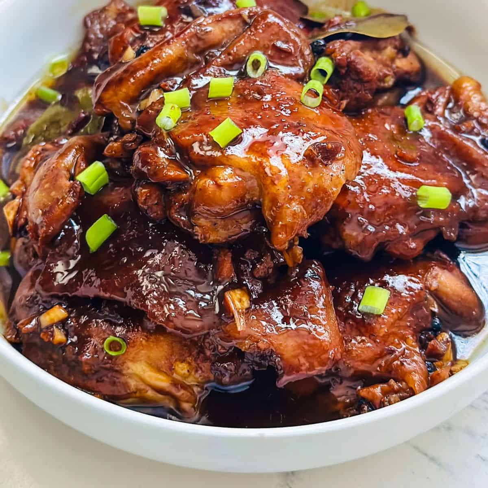

Home
Adobo

Chicken adobo is a classic Filipino dish made by simmering chicken pieces in a savory, tangy, and aromatic blend of soy sauce, vinegar, garlic, bay leaves,
and black pepper. The slow cooking process makes the chicken tender and flavorful, with a rich sauce that pairs perfectly with steamed rice.
Loved for its simplicity and depth of taste, chicken adobo is a comforting staple in Filipino households and one of the country's most iconic dishes.
Ingredients
- 1 kg chicken (thighs, drumsticks, or mixed cuts)
- ½ cup soy sauce
- ⅓ cup vinegar (cane or white)
- 1 onion (sliced, optional)
- 6 cloves garlic (crushed)
- 2-3 bay leaves
- 1 tsp whole black peppercorns (or ½ tsp ground pepper)
- 1 cup water (or chicken broth)
- 2 tbsp cooking oil
- 1 tsp sugar (optional, for balance)
- Salt to taste
Instructions:
- Marinate (optional but flavorful):
- In a bowl, combine chicken, soy sauce, vinegar, garlic, bay leaves, and pepper.
- Let it marinate for at least 30 minutes (or overnight in the fridge).
- Sauté:
- Heat oil in a pot.
- Sauté onion (if using) and garlic until fragrant.
- Add the marinated chicken (reserve marinade) and sear until lightly browned.
- Simmer:
- Pour in the reserved marinade and water/broth.
- Add bay leaves and bring to a boil.
- Lower heat, cover, and simmer for 30-40 minutes until chicken is tender.
- Adjust flavors:
- Add sugar if you prefer a slightly sweet balance.
- Taste and adjust salt/soy sauce or vinegar as needed.
- Serve:
- Simmer until sauce thickens to your liking.
- Serve hot with steamed rice.